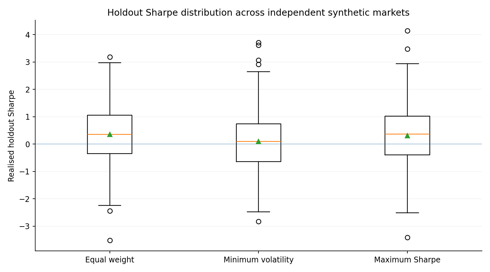
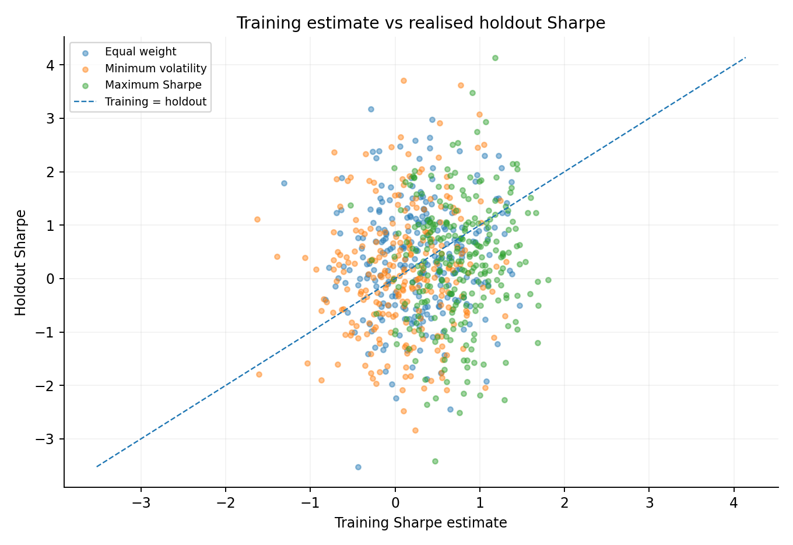
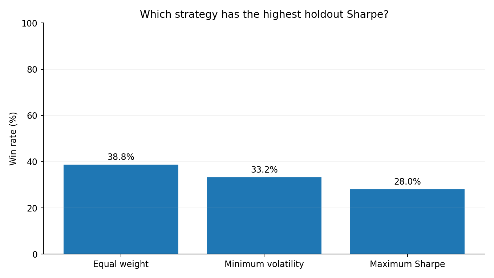
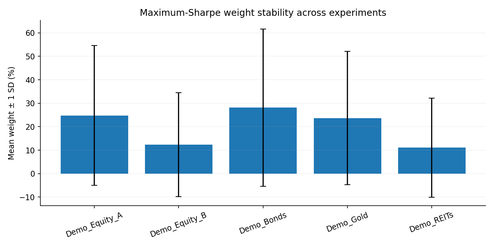

Robustness layer
Distribution, not one lucky path.
The full fit → holdout process is repeated across 250 independent synthetic market paths and three rotating volatility regimes.
Synthetic research only. These experiments test methodology under repeated fictional paths and do not forecast real investments.
250independent paths
3volatility regimes
80 / 20train / holdout split
0%holdout data used in fitting
Summary
| Strategy | Mean holdout Sharpe | Median | 5th pct. | 95th pct. | Mean training Sharpe | Train→holdout gap | Holdout win rate |
|---|---|---|---|---|---|---|---|
| Equal weight | 0.35 | 0.35 | -1.34 | 2.17 | 0.28 | +0.07 | 38.8% |
| Minimum volatility | 0.10 | 0.10 | -1.81 | 2.02 | 0.09 | +0.01 | 33.2% |
| Maximum Sharpe | 0.30 | 0.36 | -1.59 | 1.96 | 0.75 | -0.45 | 28.0% |
Holdout Sharpe distribution

Realised holdout Sharpe across 250 synthetic paths.
Training versus holdout

Estimation error becomes visible when training estimates are compared with later outcomes.
Strategy win rates

Descriptive win rates within the synthetic design; not claims of real-world superiority.
Weight stability

Dispersion in fitted weights highlights sensitivity to noisy sample estimates.
Interpretation
The repeated-path layer reduces dependence on a single random seed. Maximum-Sharpe optimisation shows a materially lower average holdout Sharpe than its average training estimate, while allocation dispersion shows how unstable optimised weights can become when the sample changes.